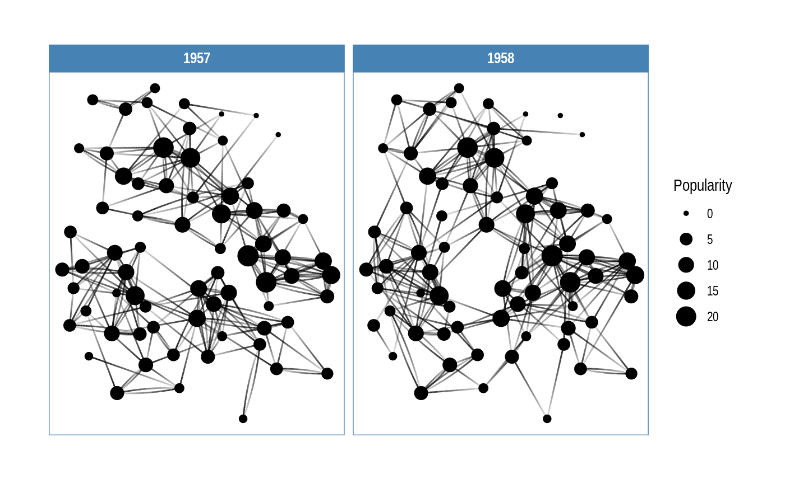

/dʒiː.dʒɪˈrɑːf/ (or g-giraffe)
A grammar of graphics for relational data
ggraph is an extension of ggplot2 aimed at supporting relational data structures such as networks, graphs, and trees. While it builds upon the foundation of ggplot2 and its API it comes with its own self-contained set of geoms, facets, etc., as well as adding the concept of layouts to the grammar.
An example
library(ggraph)
#> Loading required package: ggplot2
library(tidygraph)
#>
#> Attaching package: 'tidygraph'
#> The following object is masked from 'package:stats':
#>
#> filter
# Create graph of highschool friendships
graph <- as_tbl_graph(highschool) |>
mutate(Popularity = centrality_degree(mode = 'in'))
# plot using ggraph
ggraph(graph, layout = 'kk') +
geom_edge_fan(aes(alpha = after_stat(index)), show.legend = FALSE) +
geom_node_point(aes(size = Popularity)) +
facet_edges(~year) +
theme_graph(foreground = 'steelblue', fg_text_colour = 'white')
The core concepts
ggraph builds upon three core concepts that are quite easy to understand:
-
The Layout defines how nodes are placed on the plot, that is, it is a conversion of the relational structure into an x and y value for each node in the graph.
ggraphhas access to all layout functions available inigraphand furthermore provides a large selection of its own, such as hive plots, treemaps, and circle packing. -
The Nodes are the connected entities in the relational structure. These can be plotted using the
geom_node_*()family of geoms. Some node geoms make more sense for certain layouts, e.g.geom_node_tile()for treemaps and icicle plots, while others are more general purpose, e.g.geom_node_point(). -
The Edges are the connections between the entities in the relational structure. These can be visualized using the
geom_edge_*()family of geoms that contain a lot of different edge types for different scenarios. Sometimes the edges are implied by the layout (e.g. with treemaps) and need not be plotted, but often some sort of line is warranted.
All of the tree concepts have been discussed in detail in dedicated blog posts that are also available as vignettes in the package. Please refer to these for more information.
Note: The linked blog posts are based on ggraph v1. After ggraph v1.1 the underlying implementation was moved to tidygraph and cleaned up, but this resulted in some breaking changes in the process. Therefore the vignette versions are generally recommended as they have been updated.
Supported data types
There are many different ways to store and work with relational data in R. ggraph is built upon tidygraph and the large swath of data structures it supports are thus natively supported in ggraph. In order to get a data type supported by ggraph, simply provide an as_tbl_graph method for it.
Installation
ggraph is available through CRAN and can be installed with install.packages('ggraph'). The package is under active development though and the latest set of features can be obtained by installing from this repository using devtools
# install.packages("pak")
pak::pak('thomasp85/ggraph')Related work
ggraph is not the only package to provide some sort of support for relational data in ggplot2, though I’m fairly certain that it is the most ambitious. ggdendro provides support for dendrogram and hclust objects through conversion of the structures into line segments that can then be plotted with geom_segment(). ggtree provides more extensive support for all things tree-related, though it lacks some of the layouts and edge types that ggraph offers (it has other features that ggraph lacks though). For more standard hairball network plots ggnetwork, geomnet, and GGally all provide some functionality though none of them are as extensive in scope as ggraph.
Code of Conduct
Please note that the ‘ggraph’ project is released with a Contributor Code of Conduct. By contributing to this project, you agree to abide by its terms.